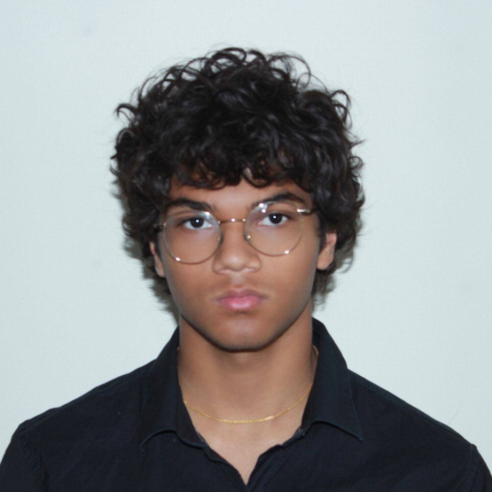

My name is Armaan, and I am an intermittent undergraduate at Dartmouth College. I currently live in California, where I am working on Blackwell. Reach me at armaanp4423@gmail.com.
I am curious about machine learning ⊂ computational cognitive science ⊂ nature of experience ⊂ theories of consciousness. I am unreasonably fond of elegant approaches to ambitious technical problems.
My other passions include Tetris, billiards, and art